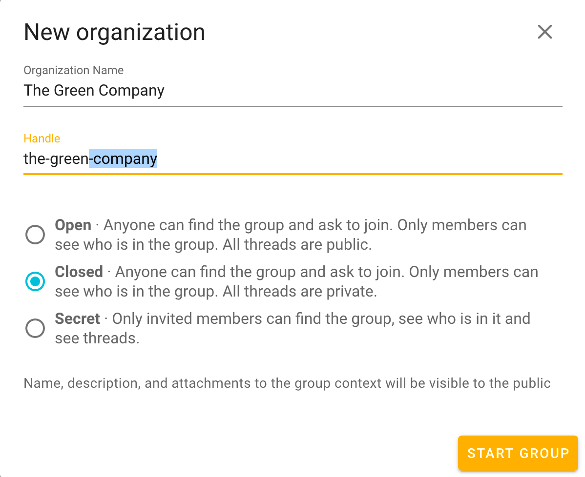
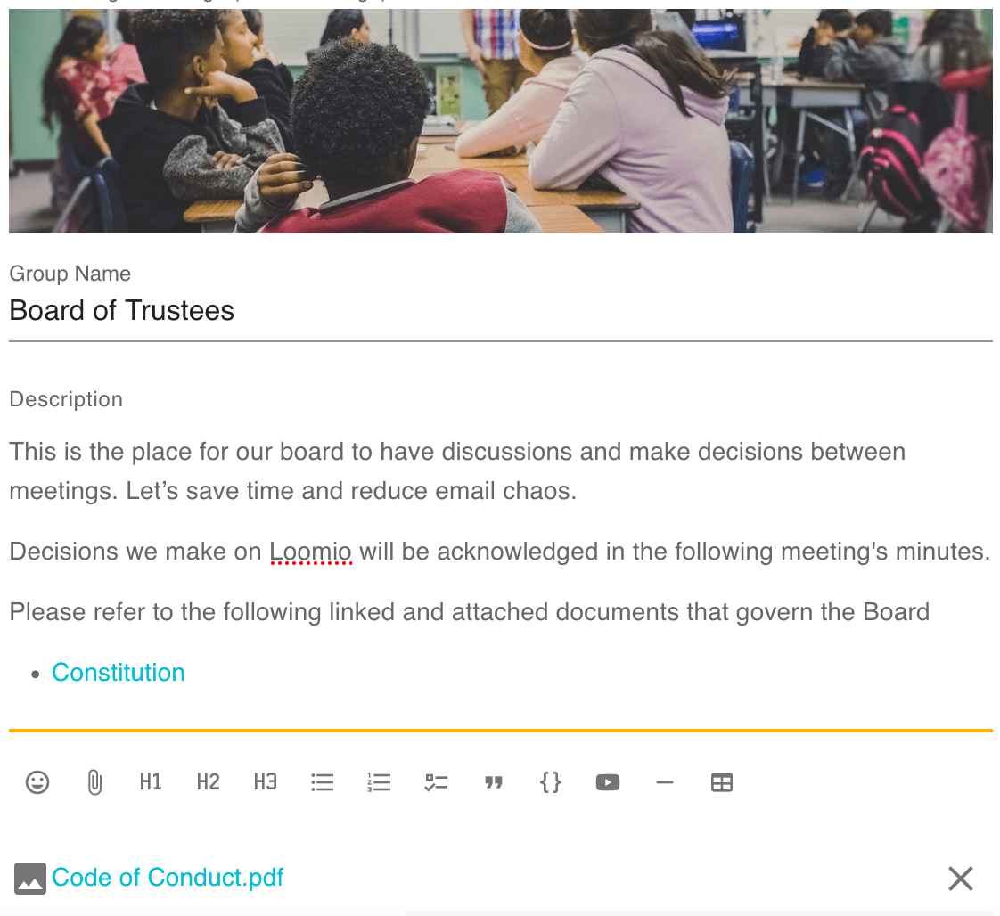
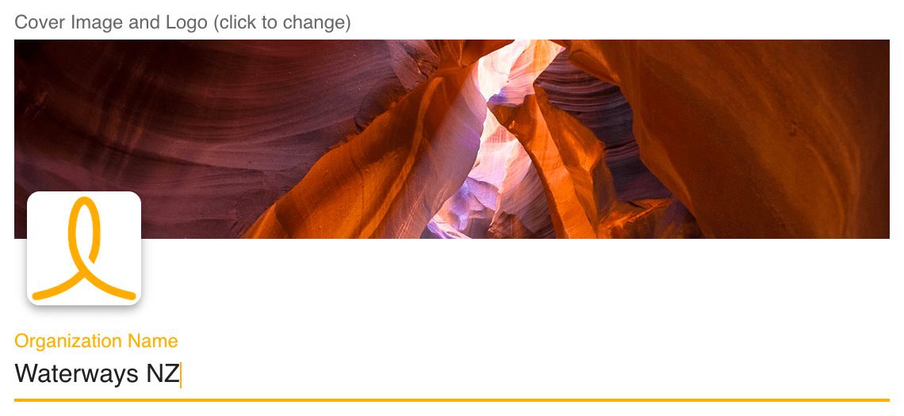

Starting a group
Create your Loomio group and ensure everyone is ready to participate.
Getting started on Loomio means getting everyone signed up, familiar with the tool, and comfortable communicating or coordinating with one another. When done well, the group will come to life as people take the initiative to participate and engage.
Most Loomio groups need a champion to help them get going, and then they build their own momentum. If you're reading this, that champion is probably you!
Want setup help from someone who has done this?
No one wants to spin their wheels, and sometimes its important to get it right the first time. Don't worry, we've done this before. We offer a streamlined experience of getting started delivered by Loomio experts:
Ask about our bespoke, guided onboarding.
Introduce Loomio
Have a discussion with your group about using Loomio.
- What problem are you trying to solve with a new tool? Eg, reducing meetings
- What is Loomio for? How will you use it, eg, forum, decisions, or just input?
- Who's involved? Who will facilitate or support conversations to be productive?
- What kind of behaviour is welcome, and what's not ok?
- How will Loomio complement your existing processes?
Some people will be apprehensive about adopting a new piece of software for online decision making. Talk to people in your group to work through any concerns.
- Starting simple can help, especially with pre-existing routines
- Agree on the scope and trial it; offer a date when it will be reviewed.
Starting a new group
When you first start, you'll create a new organization. At this stage, organization is basically another way of saying "your group." The first thing to do is enter a name and a description for your group.
Group details
You can always return to change these by visiting Edit group settings on the Settings tab of your group page.
Group name
It's best to keep your group name short and concise.
Group handle
By default, Loomio will make this your-group-name but you can choose any unused, alphanumeric handle (hyphens optional). Navigating to the URL loomio.org/[your-group-handle] will take you directly to your group page.

Group description
It's important to add a description to help people settle in and get engaged.
The description should give members a clear understanding of the purpose or scope of the group. Some examples:
"A public group for us to approve requests for use of the gallery space"
"The space for our board members to consider budget proposals"
Add a Group description by navigating to the Settings tab on your group page. Click Edit Group Settings and use the form that appears (click save when done). If you're having trouble finding it from Edit Group Settings, double-check that you haven't switched tabs ("Profile" should be highlighted in yellow).
With a clear purpose, people can make judgment calls about what's best for the group. Understanding group context helps people get oriented.
Group description is also a Resource hub
Your Loomio group page is a place to store all of the information, links, and files that everyone in your group needs. Update the Group description field and attach files from your computer or from the cloud.

Tip: Group descriptions are a great place to include reasons why you're using Loomio. Sharing why you're implementing Loomio can help motivate people to adopt it.
Privacy
Your privacy settings determine who can find your group, who can see the threads in your group, and how people join.
The recommended privacy setting for new groups is Secret. This means everything is private to those invited members of the group. No one will know about this group (or subgroup) unless you tell/ invite them.
If you want the content of your discussions and decisions to be public, change your group privacy to Open. The members list will only be visible to other members.
Many groups also use Closed, because – while it is almost entirely private like Secret – it allows people to find your group and ask to join. Closed groups' Name and Group description – including links and attachments – are publicly accessible in Closed groups.
NOTE: If you have a Closed or Secret group and change it to Open, all threads will become public. Changing an Open group to Closed or Secret will make all threads private.
Open groups may contain secret and closed subgroups.
Member of an open group can see the closed subgroup but not the secret ones.
TODO: Screenshots
Upload a profile photo
Seeing someone's face next to the text they've written can make it feel more human. It's especially important if you're the one welcoming everyone in.
Upload your profile photo before sending invitations to join the group, so that your friendly image is included.
Upload a group photo
Uploading a photo that has some meaning to your group significantly improves the sense of belonging. You can customize both the small square photo (eg, with a logo), and the big cover image (eg, with a group photo) by clicking on the placeholder images. You can always change it again by going to Group Settings.

Invite people
You're ready to invite people into the group! Loomio is a group collaboration tool, so this is an important step.
First, visit your group page and click the Members tab to access member management
Second, click one of two options
- Invite: If you have their email addresses, you can send invitations to each member of your group.
- Share: Or you can share the Reusable invitation link via email or however your team communicates.
If your group's privacy is closed then you can additionally invite people by sharing your loomio.org/handle. When people arrive at your group page, they will see the title, the description, and a button Join group to request membership. They become a group member when their request is approved.
Reminder: Closed groups are basically private, but – unlike Secret groups – disclose their Group Name and Group Description publicly.
Follow up on people who don't make it into the group and give them a nudge. You don't want to leave people out of key conversations or decisions. (You can get a sense of who is participating by looking at your thread's Seen by, and many elements of Loomio have Notification history.)
If people join but don't begin to participate right away, you might like to welcome them to the group with an @mention, for example:
“Welcome to the group @Jane :) It's great to have you here! Would you saying a little bit about your work in this space?”
Champion the use of Loomio
If you model behavior for others to emulate, your group will be more inclusive and engaging. You can help deliberation/communications progress constructively.
For example:
- “@Jane that could be a good idea, why don’t you raise a proposal so we can see if the rest of the group agrees?”
- “We haven’t heard from @Bill and @Ngaire … what are your thoughts?”
- “We might be getting off topic here. I've started another Loomio discussion about that here. Let's bring this back to the original focus.”
Developing a productive Loomio habit
If discussions happen via email, remind the group you've agreed to use Loomio and request people move the discussion over there. Sometimes it can be helpful to copy and paste what's been said so far and directly give everyone the Loomio link.
If decisions are being made in-person, invite the group to move the discussion online before concluding the decision with an outcome.
It's good to name one or more reasons why you're moving back to Loomio. A couple common reasons:
- to include people who aren't in the room
- to create documentation for future reference.
Raising the stakes is another strategy for accelerating the adoption of Loomio. An example illustrates it best: "Want to participate in the decision? You'll have to voice your position on Loomio". When taking this approach it is, of course, good to accompany this candor with care. Kindness – and, again, a reminder of the reason you're using Loomio – can help at most steps of your journey.
Next up
Now that you're on Loomio, how to get those clear outcomes… → Having discussions